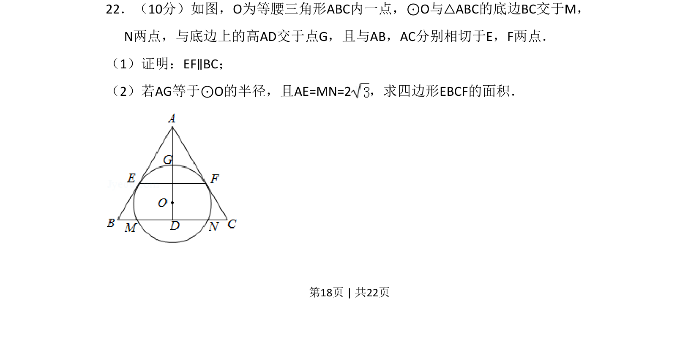
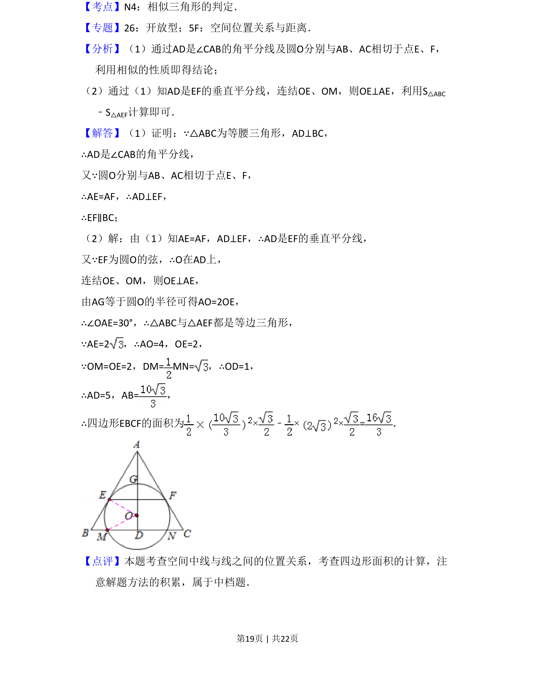

2015-文-22
考点：圆的切线性质 平行线的判定 四边形面积计算
题面


摘要
本题考查圆与三角形的切线和位置关系，证明线段平行并计算四边形面积。
关联考点
答案与解析

📄 原 PDF 第 18 页：
素材/真题/吉林/2008-2024·（吉林）数学高考真题/2015年高考数学试卷（文）（新课标Ⅱ）（解析卷）.pdf
题干文本
22．（10分）如图，O为等腰三角形ABC内一点，⊙O与△ABC的底边BC交于M， N两点，与底边上的高AD交于点G，且与AB，AC分别相切于E，F两点． （1）证明：EF∥BC； （2）若AG等于⊙O的半径，且AE=MN=2，求四边形EBCF的面积．